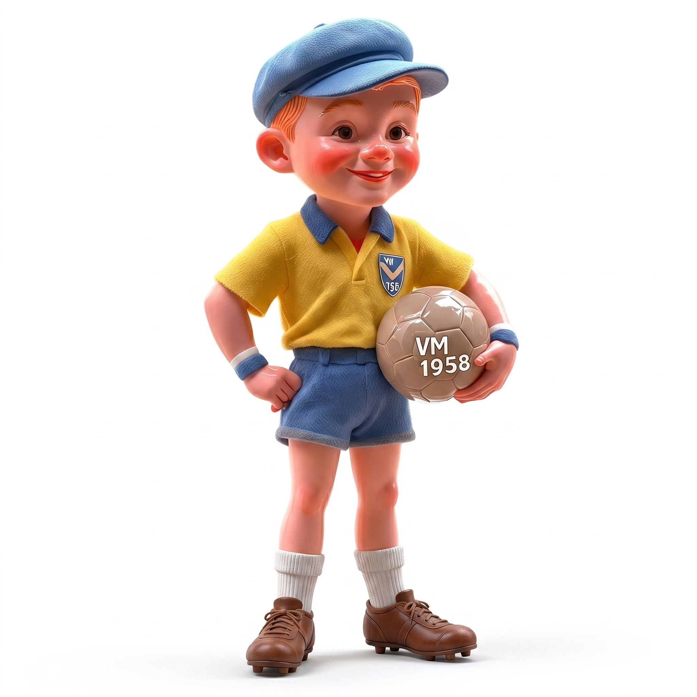
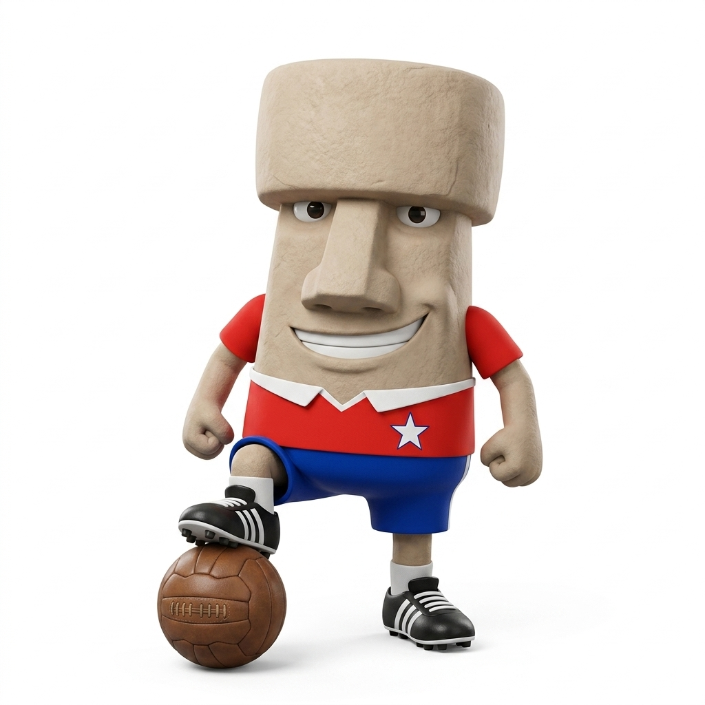
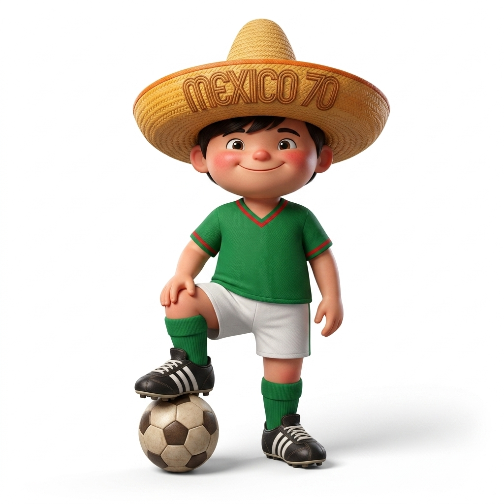
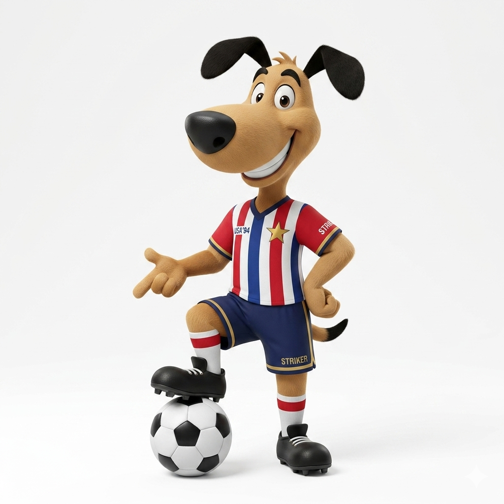

Copa do Mundo: As Conquistas do Brasil
Conheça a história do país que mais vezes ergueu a taça mais cobiçada do futebol mundial: cinco títulos, cinco estrelas e uma paixão que atravessa gerações.
O país do futebol
O Brasil é a única seleção que disputou todas as edições da Copa do Mundo e também a que mais vezes conquistou o título: cinco vezes campeão, em 1958, 1962, 1970, 1994 e 2002. As cinco estrelas que aparecem acima do escudo da CBF representam justamente essas conquistas e carregam a história de gerações de craques que encantaram o mundo com o chamado "futebol-arte".
Da estreia vitoriosa de um garoto de 17 anos chamado Pelé, em 1958, até a volta triunfal de Ronaldo Fenômeno em 2002, cada título contou uma história diferente sobre o mesmo amor pelo futebol.
As cinco conquistas

1958 - Suécia
Brasil 5 x 2 Suécia

1962 - Chile
Brasil 3 x 1 Tchecoslováquia

1970 - México
Brasil 4 x 1 Itália

1994 - Estados Unidos
Brasil 0(3) x 0(2) Itália

2002 - Japão/Coreia
Brasil 2 x 0 Alemanha